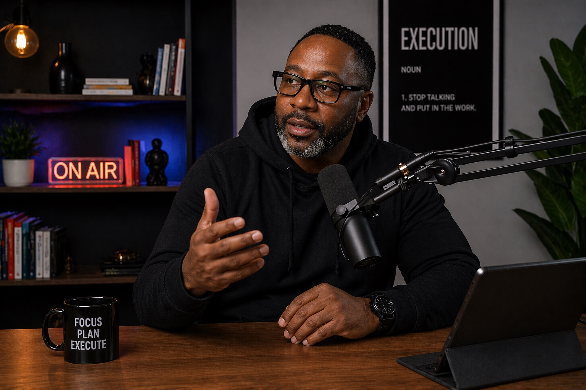
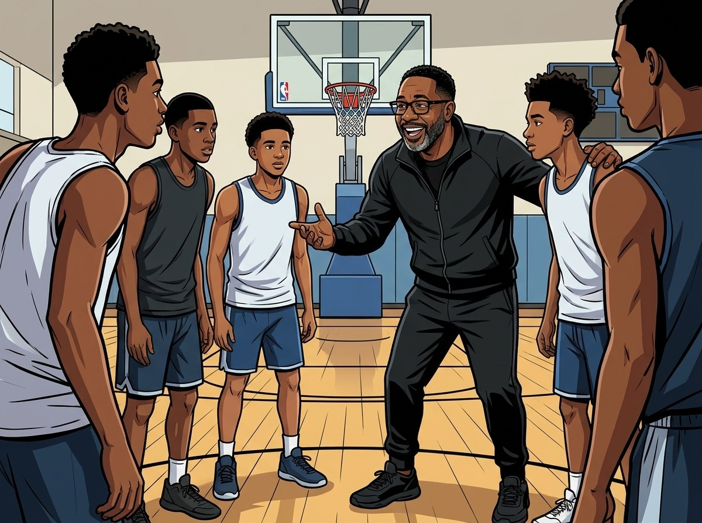

Chicagoland · Remote engagements Open to jobs and consulting work
Start with your business need
What would you like to improve?
Whether you’re hiring for your team or need help with a project, explore the work that fits your goal.
Improve how we work
Save time, reduce delays, and help teams get more done.
EL Portal
The problem
A growing college needed a better way to manage scheduling and student requirements.
My contribution
I led the design, helped shape what the team built, and worked with staff and learners to improve the process.
What I delivered
A platform launched in January 2024, supporting a reported 5,000+ students as it grew, with AI assistance added for readiness, scheduling, faculty preparation, and reporting.
AI Architectw/ 15 yrs of Enterprise UX Architecture & Product Management experience.
SDD IntelligenceBusiness Intelligence
Regulated environmentsBanking | Education | Government | Healthcare | Insurance
A practical approach to growth
Good solutions start with how your business works.
I work with teams to understand what gets in the way, choose a practical solution, and make it easier for people to do their jobs. That may mean improving a service, building a product, or using AI where it can help.
Explore more of my work
One institution. Six distinct applications & projects.
At Nightingale College, my work spans enterprise IT, clinical operations, portfolio intelligence, curriculum, and AI-assisted learning. Atlas, IT Intelligence, and the Intake Agent are three separate applications, each with its own purpose and scope.
Architecture you can inspect
Source ownership, canonical data relationships, controlled write-backs, and a defined 40-agent operating model.
Problem: Delivery teams needed connected scope, execution signals, evidence, and approvals across the project lifecycle.
System: Monday.com and SharePoint were proposed as permission-scoped sources of enterprise context. Stage, risk, and events would determine which agents activate.
Trade-off: A bounded handoff is easier to review than unrestricted agent collaboration. Human approval precedes consequential decisions and write-backs.
Problem: Leadership needed to trace project demand beyond the executive summary to the underlying staffing conflicts.
Model: Projects, staffing demand, available hours, teams, and people form the planning view.
Validation: Atlas was deployed in September 2026, as confirmed by Charious McLaurin. The linked review prototype demonstrates sample-data scenarios; it is separate from the live application.
Trade-off: A useful decision view depends on consistent source data. Source-of-record quality must be validated before relying on production forecasts.
Proposed measures: Time to identify a staffing conflict and effort spent preparing portfolio reports.
Curriculum intelligenceInteractive prototype
Clio
Trace a curriculum gap, explore a revision, and carry it through independent academic review.
OutcomeCompetency coverageApproved curriculum
AI suggests alignments. People approve changes.
My responsibility
Discovery-to-handoff product definition, 20 user stories, prototype iteration, and evaluation.
Architecture decision
One proposed model-based suggester; eleven rules-based workflows; independent approval before publication.
Prototype for review: The supplied adaptive tutoring prototype is assigned to this AI Video project. It preserves the uploaded experience and demonstrates simulated interactions.
Finding: Some beta participants interpreted AI practice feedback as a final grade.
Response: Define a clearer separation between AI guidance and instructor assessment.
Trade-off: Faster feedback is valuable only when learners understand its authority and limitations.
Proposed measures: Agreement with faculty rubric scores, time to useful feedback, and cost per usable attempt. Evaluation results remain a validation step.
Diagrams are portfolio reconstructions of the design concepts. Project status and individual responsibility are stated explicitly.
Architectural judgment
Choose the right tool for each responsibility.
An AI architecture includes more than a model. It also defines what stays deterministic, what data is trusted, and how a person intervenes.
Exact information
Query the record.
Use structured queries for specific Monday.com records. Exact operational data should come from its source of record.
Context and meaning
Retrieve the source.
Use retrieval for relevant policies and prior requests. Keep source references attached to the explanation.
Mandatory checks
Keep rules explicit.
Required information and approval gates belong in application rules, where their behavior can be tested consistently.
Consequential actions
Give people control.
Define who approves, who can override, and which actions require review before anything changes in another system.
What I define before implementation
System boundaries, responsibilities, event triggers, and integration contracts.
Source-of-record ownership, access permissions, and data-handling constraints.
Missing information, tool failures, retries, and escalation paths.
Acceptance criteria, evaluation cases, audit needs, and release scope.
Latency, operating costs, and ongoing ownership to validate with engineering.
Each consideration becomes a testable delivery requirement, with ownership agreed before release.
Where I can help
Bring me the workflow you need to rethink.
AI opportunity & architecture
Identify a focused use case, map the system, and define a practical path from discovery to pilot.
Use-case assessment · Architecture outline · Pilot scope
Agent & workflow design
Define agent responsibilities, tools, context, handoffs, and the human approval experience.
Workflow model · Control boundaries · Acceptance criteria
Product & delivery alignment
Turn business needs into prioritized requirements that product, engineering, and operations can work from.
Enterprise experience. A human-centered perspective.
My career connects product direction, UX architecture, and enterprise systems. I bring the same attention to AI: how it works, how people use it, and how teams deliver it.
2024–2026 · Contract
Nightingale College
Enterprise AI Product Manager · Jan 2025–Nov 2026 AI Architect · Apr 2024–Dec 2025
AI orchestration design, clinical operations product ownership, and portfolio intelligence.
2022–2024 · Contract
U.S. Bank
Senior UX Architect
Regulated workflows, accessibility, and design system governance.
2021–2022 · Consulting
Office of the Comptroller of the Currency
Senior UX Architect
Information architecture and bank examination workflows.
Additional experience
Enterprise consulting across industries
Mitsubishi Electric Trane HVAC · Rush University · Nationwide Insurance · Root Insurance
Clarify what is happening, who is affected, and what needs to change.
Analyze the process and system.
Understand the workflow, its dependencies, and the business environment around it.
Test the pathways.
Reproduce the issue and identify why it happens so the new solution does not recreate it.
Automate with purpose.
Add or modify functionality where it supports a clear goal and strategic direction.
Align with the business ecosystem.
Make sure the solution and the teams and systems supporting it can serve the business goals.
A little more about me
Curious about systems. Grounded in people.
I’ve spent more than 15 years helping organizations turn complex ideas into structured digital products. Today, I focus that experience on enterprise AI architecture, product strategy, and the relationship between people and intelligent systems.
Beyond the architecture

In conversationMorning Park MeditationHome Office Deep ReadData Model Architecture Briefing

Team Huddle Mentor
1 of 5
Illustrative personal imagery. Project evidence and status are presented in the architecture case studies above.
In progress 2027 · Professional development roadmap
My philosophy · Five questions
How I think. How we’ll work together.
I connect business goals, people, and technology to build products that help a business grow. These five principles guide my decisions.
How do you approach a business problem?
I start with the result we want: more revenue, better service, less wasted time, or room to grow. Then I look at how people work today and where things break down. I want to solve the cause of the problem, so we spend time and money on something that matters.
What does good design mean to you?
Good design helps people know what to do next. I aim to remove extra steps, prevent mistakes, and make the product easy to use for people with different needs. I test ideas with the people doing the work. A polished screen only helps if it makes their work better.
How do you decide where AI belongs?
I give AI a clear job within a larger system. It can explain information, spot patterns, or suggest a next step. Fixed rules and exact calculations belong in reliable software. I define what data AI can use, what actions it can take, and when a person must review its work. Before expanding its role, I check its accuracy, cost, and value to the business.
How do you bring stakeholders together?
I help leaders, users, and delivery teams agree on the problem and what success looks like. I show options and explain what each one gains, costs, or puts at risk. I make sure we know who owns the decision and bring in the people who use the product. When views differ, I use research and working examples to move the conversation forward.
How do you lead a product from idea to delivery?
I turn the goal into a clear plan and start with the smallest version that provides real value. I use prototypes to test ideas early and work with the team to set priorities, scope, and clear requirements. We agree on how to measure progress, then learn from real use. I judge success by better results for the business and its users.
Let’s build a clear path forward
Let’s turn your next challenge into an opportunity.
I’d love to hear about your next big idea—or one you’re ready to take further. I enjoy talking through possibilities and exploring ways to bring them to life. If it’s something you’re excited about, let’s start a conversation.